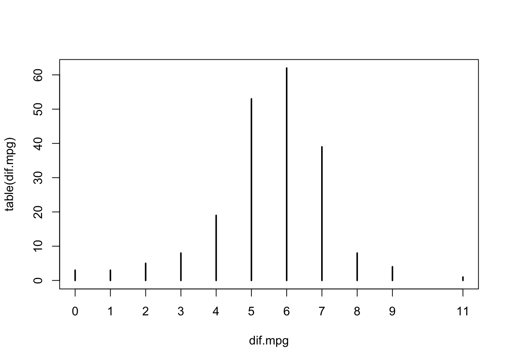

Chapter 12 Testing Hypothesis
12.1 Student Learning Objectives
Hypothesis testing emerges as a crucial component in decision making where one of two competing options needs to be selected. Statistical hypothesis testing provides formal guidelines for making such a selection. This chapter deals with the formulation of statistical hypothesis testing and describes the associated decision rules. Specifically, we consider hypothesis testing in the context of the expectation of a measurement and in the context of the probability of an event. In subsequent chapters we deal with hypothesis testing in the context of other parameters as well. By the end of this chapter, the student should be able to:
Formulate statistical hypothesis for testing.
Test, based on a sample, hypotheses regarding the expectation of the measurement and the probability of an event.
Identify the limitations of statistical hypothesis testing and the danger of misinterpretation of the test’s conclusions.
12.2 The Theory of Hypothesis Testing
Statistical inference is used in order to detect and characterize meaningful phenomena that may be hidden in an environment contaminated by random noise. Hypothesis testing is an important step, typically the first, in the process of making inferences. In this step one tries to answer the question: “Is there a phenomena at all?”. The basic approach is to determine whether the observed data can or cannot be reasonably explained by a model of randomness that does not involve the phenomena.
In this section we introduce the structure and characteristics of statistical hypothesis testing. We start with an informal application of a statistical test and proceed with formal definitions. In the next section we discuss in more detail the testing of hypotheses on the expectation of a measurement and the testing of hypotheses on the probability of an event. More examples are considered in subsequent chapters.
12.2.1 An Example of Hypothesis Testing
The variable “price” in the file “cars.csv” contains data on the
prices of different types of cars that were sold in the United States
during 1985. The average price of a car back then — the average of the
variable “price” — was $13,207. One may be interested in the
question: Do Americans pay today for cars a different price than what
they used to pay in the 80’s? Has the price of cars changed
significantly since 1985?
The average price of a car in the United States in 2009 was $27,95852. Clearly, this figure is higher than $13,207. However, in order to produce a fair answer to the question we have to take into account that, due to inflation, the prices of all products went up during these years. A more meaningful comparison will involve the current prices of cars in terms of 1985 Dollars. Indeed, if we take into account inflation then we get that, on the average, the cost of today’s cars corresponds to an average price of $13,662 in 1985 values53. This price is still higher than the prices in the 1985 but not as much. The question we are asking is: “Is the difference between $13,207 and $13,662 significant or is it not so?”.
In order to give a statistical answer to this question we carry out a
statistical test. The specific test is conducted with the aid of the
function “t.test”. Later we will discuss in more details some of the
arguments that may be used in this function. Currently, we simply apply
it to the data stored in the variable “price” to test that the
expected price is different than the $13,662, the average price of a
car in 2009, adjusted for inflation:
cars <- read.csv("_data/cars.csv")
t.test(cars$price,mu=13662)##
## One Sample t-test
##
## data: cars$price
## t = -0.811482, df = 200, p-value = 0.41805
## alternative hypothesis: true mean is not equal to 13662
## 95 percent confidence interval:
## 12101.797 14312.462
## sample estimates:
## mean of x
## 13207.129The data in the file “cars.csv” is read into a data frame that is
given the name “cars”. Afterwards, the data on prices of car types in
1985 is entered as the first argument to the function “t.test”. The
other argument is the expected value that we want to test, the current
average price of cars, given in terms of 1985 Dollar value. The output
of the function is reported under the title: “One Sample t-test”.
Let us read the report from the bottom up. The bottom part of the report
describes the confidence interval and the point estimate of the expected
price of a car in 1985, based on the given data. Indeed, the last line
reports the sample average of the price, which is equal to 13,207.13.
This number, the average of the 201 non-missing values of the variable
“price”, serves as the estimate of the expected price of a car in
1985. The 95% confidence interval of the expectation, the interval
\[12101.80, 14312.46\], is presented on the 4th line from the bottom.
This is the confidence interval for the expectation that was computed in
Subsection 11.2.254.
The information relevant to conducting the statistical test itself is
given in the upper part of the report. Specifically, it is reported that
the data in “cars$price” is used in order to carry out the test. Based
on this data a test statistic is computed and obtains the value of
“t = -0.8115”. This statistic is associated with the \(t\)-distribution
with “df = 200” degrees of freedom. The last quantity that is being
reported is denoted the \(p\)-value and it obtains the value
“p-value = 0.4181”. The test may be carried out with the aid of the
value of the \(t\) statistic or, more directly, using the \(p\)-value.
Currently we will use the \(p\)-value.
The test itself examines the hypothesis that the expected price of a car
in 1985 was equal to $13,662, the average price of a car in 2009, given
in 1985 values. This hypothesis is called the null hypothesis. The
alternative hypothesis is that the expected price of a car in 1985 was
not equal to that figure. The specification of the alternative
hypothesis is reported on the third line of the output of the function
“t.test”.
One may decide between the two hypothesis on the basis of the size of the \(p\)-value. The rule of thumb is to reject the null hypothesis, and thus accept the alternative hypothesis, if the \(p\)-value is less than 0.05. In the current example the \(p\)-value is equal 0.4181 and is larger than 0.05. Consequently, we may conclude that the expected price of a car in 1985 was not significantly different than the current price of a car.
In the rest of this section we give a more rigorous explanation of the theory and practice of statistical hypothesis testing.
12.2.2 The Structure of a Statistical Test of Hypotheses
The initial step in statistical inference in general, and in statistical
hypothesis testing in particular, is the formulation of the statistical
model and the identification of the parameter/s that should be
investigated. In the current situation the statistical model may
correspond to the assumption that the data in the variable “price” are
an instance of a random sample (of size \(n=201\)). The parameter that
we want to investigate is the expectation of the measurement that
produced the sample. The variance of the measurement is also relevant
for the investigation.
After the statistical model has been set, one may split the process of
testing a statistical hypothesis into three steps: (i) formulation of
the hypotheses, (ii) specification of the test, and (iii) reaching the
final conclusion. The first two steps are carried out on the basis of
the probabilistic characteristics of the statistical model and in the
context of the sampling distribution. In principal, the first two steps
may be conducted in the planning stage prior to the collection of the
observations. Only the third step involves the actual data. In the
example that was considered in the previous subsection the third step
was applied to the data in the variable “price” using the function
“t.test”.
(i) Formulating the hypotheses: A statistical model involves a parameter that is the target of the investigation. In principle, this parameter may obtain any value within a range of possible values. The formulation of the hypothesis corresponds to splitting the range of values into two sub-collections: a sub-collection that emerges in response to the presence of the phenomena and a sub-collection that emerges in response to the situation when the phenomena is absent. The sub-collection of parameter values where the phenomena is absent is called the null hypothesis and is marked as “\(H_0\)”. The other sub-collection, the one reflecting the presence of the phenomena, is denoted the alternative hypothesis and is marked “\(H_1\)”.
For example, consider the price of cars. Assume that the phenomena one wishes to investigate is the change in the relative price of a car in the 80’s as compared to prices today. The parameter of interest is the expected price of cars back then, which we denote by \(\Expec(X)\). The formulation of the statement that the expected price of cars has changed is “\(\Expec(X) \not = 13,662\)”. This statement corresponds to the presence of a phenomena, to a change, and is customarily defined as the alternative hypothesis. On the other hand, the situation “\(\Expec(X) = 13,662\)” corresponds to not having any change in the price of cars. Hence, this situation corresponds to the absence of the phenomena and is denoted the null hypothesis. In summary, in order to investigate the change in the relative price of cars we my consider the null hypothesis “\(H_0:\Expec(X) = 13,662\)” and test it against the alternative hypothesis “\(H_1: \Expec(X)\not = 13,662\)”.
A variation in the formulation of the phenomena can change the definition of the null and alternative hypotheses. For example, if the intention is to investigate the rise in the price of cars then the phenomena will correspond to the expected price in 1985 being less than $13,662. Accordingly, the alternative hypothesis should be defined as \(H_1: \Expec(X) < 13,662\), with the null hypothesis defined as \(H_0: \Expec(X) \geq 13,662\). Observe that in this case an expected price larger than $13,662 relates to the phenomena of rising (relative) prices not taking place.
On the other hand, if one would wants to investigate a decrease in the price then one should define the alternative hypothesis to be \(H_1: \Expec(X) > 13,662\), with the null hypothesis being \(H_0: \Expec(X) \leq 13,662\).
The type of alternative that was considered in the example, \(H_1: \Expec(X) \not = 13,622\) is called a two-sided alternative. The other two types of alternative hypotheses that were considered thereafter, \(H_1: \Expec(X) < 13,662\) and \(H_1: \Expec(X) > 13,662\), are both called one-sided alternatives.
In summary, the formulation of the hypothesis is a reflection of the phenomena one wishes to examine. The setting associated with the presence of the phenomena is denoted the alternative hypothesis and the complimentary setting, the setting where the phenomena is absent, is denoted the null hypothesis.
(ii) Specifying the test: The second step in hypothesis testing involves the selection of the decision rule, i.e. the statistical test, to be used in order to decide between the two hypotheses. The decision rule is composed of a statistic and a subset of values of the statistic that correspond to the rejection of the null hypothesis. The statistic is called the test statistic and the subset of values is called the rejection region. The decision is to reject the null hypothesis (and consequently choose the alternative hypothesis) if the test statistic falls in the rejection region. Otherwise, if the test statistic does not fall in the rejection region then the null hypothesis is selected.
Return to the example in which we test between \(H_0:\Expec(X) = 13,662\) and \(H_1:\Expec(X) \not= 13,662\). One may compute the statistic:
\[T = \frac{\bar X - 13,662}{S/\sqrt{n}}\;,\] where \(\bar X\) is the
sample average (of the variable “price”), \(S\) is the sample standard
deviation, and \(n\) is the sample size (\(n = 201\) in the current
example).
The sample average \(\bar X\) is an estimator of a expected price of the car. In principle, the statistic \(T\) measures the discrepancy between the estimated value of the expectation (\(\bar X\)) and the expected value under the null hypothesis (\(\Expec(X) = 13,662\)). This discrepancy is measured in units of the (estimated) standard deviation of the sample average55.
If the null hypothesis \(H_0:\Expec(X) = 13,662\) is true then the sampling distribution of the sample average \(\bar X\) should be concentrated about the value 13,662. Values of the sample average much larger or much smaller than this value may serve as evidence against the null hypothesis.
In reflection, if the null hypothesis holds true then the values of the sampling distribution of the statistic \(T\) should tend to be in the vicinity of 0. Values with a relative small absolute value are consistent with the null hypothesis. On the other hand, extremely positive or extremely negative values of the statistic indicate that the null hypothesis is probably false.
It is natural to set a value \(c\) and to reject the null hypothesis
whenever the absolute value of the statistic \(T\) is larger than \(c\). The
resulting rejection region is of the form \(\{|T| > c\}\). The rule of
thumb, again, is to take threshold \(c\) to be equal the 0.975-percentile
of the \(t\)-distribution on \(n-1\) degrees of freedom, where \(n\) is the
sample size. In the current example, the sample size is \(n=201\) and the
percentile of the \(t\)-distribution is qt(0.975,200) = 1.971896.
Consequently, the subset \(\{|T| > 1.971896\}\) is the rejection region of
the test.
A change in the hypotheses that are being tested may lead to a change in
the test statistic and/or the rejection region. For example, for testing
\(H_0: \Expec(X) \geq 13,662\) versus \(H_1: \Expec(X) < 13,662\) one may
still use the same test statistic \(T\) as before. However, only very
negative values of the statistic are inconsistent with the null
hypothesis. It turns out that the rejection region in this case is of
the form \(\{T < -1.652508\}\), where qt(0.05,200) = -1.652508 is the
0.05-percentile of the \(t\)-distribution on 200 degrees of freedom. On
the other hand, the rejection region for testing between
\(H_0: \Expec(X) \leq 13,662\) and \(H_1: \Expec(X) > 13,662\) is
\(\{T > 1.652508\}\). In this case, qt(0.95,200) = 1.652508 is the
0.95-percentile of the \(t\)-distribution on 200 degrees of freedom.
Selecting the test statistic and deciding what rejection region to use specifies the statistical test and completes the second step.
(iii) Reaching a conclusion: After the stage is set, all that is left is to apply the test to the observed data. This is done by computing the observed value of the test statistic and checking whether or not the observed value belongs to the rejection region. If it does belong to the rejection region then the decision is to reject the null hypothesis. Otherwise, if the statistic does not belong to the rejection region, then the decision is to accept the null hypothesis.
Return to the example of testing the price of car types. The observed
value of the \(T\) statistic is part of the output of the application of
the function “t.test” to the data. The value is “t = -0.8115”. As an
exercise, let us recompute directly from the data the value of the \(T\)
statistic:
x.bar <- mean(cars$price,na.rm=TRUE)
x.bar## [1] 13207.129s <- sd(cars$price,na.rm=TRUE)The observed value of the sample average is \(\bar x = 13207.13\) and the observed value of the sample standard deviation is \(s = 7947.066\). The sample size (due to having 4 missing values) is \(n=201\). The formula for the computation of the test statistic in this example is \(t = [\bar x - 13,662]/[s/\sqrt{n}]\). Plugging in this formula the sample size and the computed values of the sample average and standard deviation produces:
(x.bar - 13662)/(s/sqrt(201))## [1] -0.8114824This value, after rounding up, is equal to the value “t = -0.8115”
that is reported in the output of the function “t.test”.
The critical threshold for the absolute value of the \(T\) statistic on
\(201-1 = 200\) degrees of freedom is qt(0.975,200) = 1.971896. Since
the absolute observed value (\(|t| = 0.8114824\)) is less then the
threshold we get that the value of the statistic does not belong to the
rejection region (which is composed of absolute values larger than the
threshold). Consequently, we accept the null hypothesis. This null
hypothesis declares that the expected price of a car was equal to the
current expected price (after adjusting for the change in Consumer Price
Index)56.
12.2.3 Error Types and Error Probabilities
The \(T\) statistic was proposed for testing a change in the price of a
car. This statistic measures the discrepancy between the sample average
price of a car and the expected value of the sample average, where the
expectation is computed under the null hypothesis. The structure of the
rejection region of the test is \(\{|T| > c\}\), where \(c\) is an
appropriate threshold. In the current example the value of the threshold
\(c\) was set to be equal to qt(0.975,200) = 1.971896. In general, the
specification of the threshold \(c\) depends on the error probabilities
that are associated with the test. In this section we describe these
error probabilities.
The process of making decisions may involve errors. In the case of hypothesis testing one may specify two types of error. On the one hand, the case may be that the null hypothesis is correct (in the example, \(\Expec(X) = 13,662\)). However, the data is such that the null hypothesis is rejected (here, \(|T| > 1.971896\)). This error is called a Type I error.
A different type of error occurs when the alternative hypothesis holds (\(\Expec(X) \not= 13,662\)) but the null hypothesis is not rejected (\(|T| \leq 1.971896\)). This other type of error is called Type II error. A summary of the types of errors can be found in Table 12.1:
| \(H_0: \Expec(X) = 13,662\) | \(H_1:\Expec(X) \not= 13,662\) | |
|---|---|---|
| Accept \(H_0\): \(|T| \leq 1.971896\) | Type II Error | |
| Reject \(H_0\): \(|T| > 1.971896\) | Type I Error |
In statistical testing of hypothesis the two types of error are not treated symmetrically. Rather, making a Type I error is considered more severe than making a Type II error. Consequently, the test’s decision rule is designed so as to assure an acceptable probability of making a Type I error. Reducing the probability of a Type II error is desirable, but is of secondary importance.
Indeed, in the example that deals with the price of car types the
threshold was set as high as qt(0.975,200) = 1.971896 in order to
reject the null hypothesis. It is not sufficient that the sample average
is not equal to 13,662 (corresponding to a threshold of 0), but it has
to be significantly different from the expectation under the null
hypothesis, the distance between the sample average and the null
expectation should be relatively large, in order to exclude \(H_0\) as an
option.
The significance level of the evidence for rejecting the null hypothesis is based on the probability of the Type I error. The probabilities associated with the different types of error are presented in Table 12.2:
| \(H_0: \Expec(X) = 13,662\) | \(H_1:\Expec(X) \not= 13,662\) | |
|---|---|---|
| \(\Prob(|T| \leq c)\) | Prob. of Type II Error | |
| \(\Prob(|T| > c)\) | Significance Level | Statistical Power |
Observe that the probability of a Type I error is called the
significance level. The significance level is set at some pre-specified
level such as 5% or 1%, with 5% being the most widely used level. In
particular, setting the threshold in the example to be equal to
qt(0.975,200) = 1.971896 produces a test with a 5% significance level.
This lack of symmetry between the two hypothesis proposes another interpretation of the difference between the hypothesis. According to this interpretation the null hypothesis is the one in which the cost of making an error is greater. Thus, when one separates the collection of parameter values into two subsets then the subset that is associated with a more severe error is designated as the null hypothesis and the other subset becomes the alternative.
For example, a new drug must pass a sequence of clinical trials before it is approved for distribution. In these trials one may want to test whether the new drug produces beneficial effect in comparison to the current treatment. Naturally, the null hypothesis in this case would be that the new drug is no better than the current treatment and the alternative hypothesis would be that it is better. Only if the clinical trials demonstrates a significant beneficiary effect of the new drug would it be released for marketing.
In scientific research, in general, the currently accepted theory, the conservative explanation, is designated as the null hypothesis. A claim for novelty in the form of an alternative explanation requires strong evidence in order for it to be accepted and be favored over the traditional explanation. Hence, the novel explanation is designated as the alternative hypothesis. It replaces the current theory only if the empirical data clearly supports its. The test statistic is a summary of the empirical data. The rejection region corresponds to values that are unlikely to be observed according to the current theory. Obtaining a value in the rejection region is an indication that the current theory is probably not adequate and should be replaced by an explanation that is more consistent with the empirical evidence.
The second type of error probability in Table \[tab:Testing\_2\] is the probability of a Type II error. Instead of dealing directly with this probability the tradition is to consider the complementary probability that corresponds to the probability of not making a Type II error. This complementary probability is called the statistical power:
\[\mbox{Statistical Power} = 1 - \mbox{Probability of Type II Error}\] The statistical power is the probability of rejecting the null hypothesis when the state of nature is the alternative hypothesis. (In comparison, the significance level is the probability of rejecting the null hypothesis when the state of nature is the null hypothesis.) When comparing two decision rules for testing hypothesis, both having the same significance level, the one that possesses a higher statistical power should be favored.
12.2.4 \(p\)-Values
The \(p\)-value is another test statistic. It is associated with a specific test statistic and a structure of the rejection region. The \(p\)-value is equal to the significance level of the test in which the observed value of the statistic serves as the threshold. In the current example, where the \(T\) is the underlying test statistic and the structure of the rejection region is of the form \(\{|T| > c\}\) then the \(p\)-value is equal to the probability of rejecting the null hypothesis in the case where the threshold \(c\) is equal to the observed absolute value of the \(T\) statistic. In other words:
\[\mbox{$p$-value} = \Prob(|T| > |t|) = \Prob(|T| > |-0.8114824|)= \Prob(|T| > 0.8114824)\;,\] where \(t=-0.8114824\) is the observed value of the \(T\) statistic and the computation of the probability is conducted under the null hypothesis.
Specifically, under the null hypothesis \(H_0: \Expec(X) = 13,662\) we get that the distribution of the statistic \(T = [\bar X - 13,662]/[S/\sqrt{n}]\) is the \(t\)-distribution on \(n-1 = 200\) degrees of freedom. The probability of the event \(\{|T| > 0.8114824\}\) corresponds to the sum of the probabilities of both tails of the distribution. By the symmetry of the \(t\)-distribution this equals twice the probability of the upper tail:
\[\Prob(|T| > 0.8114824) = 2\cdot \Prob(T> 0.8114824) = 2\cdot [1-\Prob(|T| \leq 0.8114824)]\;.\]
When we compute this probability in R we get:
2*(1-pt(0.8114824,200))## [1] 0.41805339This probability is equal, after rounding up, to the probability
“p-value = 0.4181” that is reported in the output of the function
“t.test”.
The \(p\)-value is a function of the data. In the particular data set the computed value of the \(T\) statistic was -0.8114824. For a different data set the evaluation of the statistic would have produced a different value. As a result, the threshold that would have been used in the computation would have been different, thereby changing the numerical value of the \(p\)-value. Being a function of the data, we conclude that the \(p\)-value is a statistic.
The \(p\)-value is used as a test statistic by comparing its value to the pre-defined significance level. If the significance level is 1% then the null hypothesis is rejected for \(p\)-values less that 0.01. Likewise, if the significance level is set at the 5% level then the null hypothesis is rejected for \(p\)-values less than 0.05.
The statistical test that is based directly on the \(T\) statistic and the statistical test that is based on the \(p\)-value are equivalent to each other. The one rejects the null hypothesis if, and only if, the other does so. The advantage of using the \(p\)-value as the test statistic is that no further probabilistic computations are required. The \(p\)-value is compared directly to the significance level we seek. For the test that examines the \(T\) statistic we still need to identify the threshold associated with the given significance level.
In the next 2 sections we extend the discussion of the \(t\)-test and give
further examples to the use of the function “t.test”. We also deal
with tests on probabilities of events and introduce the function
“prop.test” for conducting such tests.
12.3 Testing Hypothesis on Expectation
Let us consider the variable “dif.mpg” that contains the difference in
fuel consumption between highway and city conditions. This variable was
considered in Chapter 11. Examine the distribution of
this variable:
dif.mpg <- cars$highway.mpg - cars$city.mpg
summary(dif.mpg)## Min. 1st Qu. Median Mean 3rd Qu. Max.
## 0.0000 5.0000 6.0000 5.5317 7.0000 11.0000plot(table(dif.mpg))
In the first expression we created the variable “dif.mpg” that
contains the difference in miles-per-gallon. The difference is computed
for each car type between highway driving conditions and urban driving
condition. The summary of this variable is produced in the second
expression. Observe that the values of the variable range between 0 and
11, with 50% of the distribution concentrated between 5 and 7. The
median is 6 and the mean is 5.532. The last expression produces the bar
plot of the distribution. It turns out that the variable “dif.mpg”
obtains integer values.
In this section we test hypotheses regarding the expected difference in fuel consumption between highway and city conditions.
Energy is required in order to move cars. For heavier cars more energy is required. Consequently, one may conjecture that milage per gallon for heavier cars is less than the milage per gallon for lighter cars.
The relation between the weight of the car and the difference between the milage-per-gallon in highway and city driving conditions is less clear. On the one hand, urban traffic involves frequent changes in speed in comparison to highway conditions. One may presume that this change in speed is a cause for reduced efficiency in fuel consumption. If this is the case then one may predict that heavier cars, which require more energy for acceleration, will be associated with a bigger difference between highway and city driving conditions in comparison to lighter cars.
One the other hand, heavier cars do less miles per gallon overall. The difference between two smaller numbers (the milage per gallon in highway and in city conditions for heavier cars) may tend to be smaller than the difference between two larger numbers (the milage per gallon in highway and in city conditions for lighter cars). If this is the case then one may predict that heavier cars will be associated with a smaller difference between highway and city driving conditions in comparison to lighter cars.
The average difference between highway and city conditions is approximately 5.53 for all cars. Divide the cars into to two groups of equal size: One group is composed of the heavier cars and the other group is composed of the lighter cars. We will examine the relation between the weight of the car and difference in miles per gallon between the two driving conditions by testing hypotheses separately for each weight group57. For each such group we start by testing the two-sided hypothesis \(H_1:\Expec(X) \not = 5.53\), where \(X\) is the difference between highway and city miles-per-gallon in cars that belong to the given weight group. After carrying the test for the two-sided alternative we will discuss results of the application of tests for one-sided alternatives.
We start by the definition of the weight groups. The variable
“curb.weight” measures the weight of the cars in the data frame
“cars”. Let us examine the summary of the content of this variable:
summary(cars$curb.weight)## Min. 1st Qu. Median Mean 3rd Qu. Max.
## 1488.0 2145.0 2414.0 2555.6 2935.0 4066.0Half of the cars in the data frame weigh less than 2,414 lb and half the cars weigh more. The average weight of a car is 2,556 lb. Let us take 2,414 as a threshold and denote cars below this weight as “light” and cars above this threshold as “heavy”:
heavy <- cars$curb.weight > 2414
table(heavy)## heavy
## FALSE TRUE
## 103 102The variable “heavy” indicates for each car type whether its weight is
above or below the threshold weight of 2,414 lb. The variable is
composed of a sequence with as many components as the number of
observations in the data frame “cars” (\(n = 205\)). Each component is a
logical value: “TRUE” if the car is heavier than the threshold and
“FALSE” if it is not. When we apply the function “table” to this
sequence we get that 102 of the cars are heavier than the threshold and
103 are not so.
We would like to apply the \(t\)-test first to the subset of all cars with
weight above 2,414 lb (cars that are associated with the value “TRUE”
in the variable “heavy”), and then to all cars with weights not
exceeding the threshold (cars associated with value “FALSE”). In the
past we showed that one may address components of a sequence using its
position in the sequence58. Here we demonstrate an alternative
approach for addressing specific locations by using a sequence with
logical components.
In order to illustrate this second approach consider the two sequences:
w <- c(5,3,4,6,2,9)
d <- c(13,22,0,12,6,20)Say we want to select the components of the sequence “d” in all the
locations where the components of the sequence “w” obtain values
larger than 5. Consider the code:
w > 5## [1] FALSE FALSE FALSE TRUE FALSE TRUEd[w > 5]## [1] 12 20The expression “w > 5” is a sequence of logical components, with the
value “TRUE” at the positions where “w” is above the threshold and
the value “FALSE” at the positions where “w” is below the threshold.
We may use the sequence with logical components as an index to the
sequence of the same length “d”. The relevant expression is
“d[w > 5]”. The output of this expression is the sub-sequence of
elements from “d” that are associated with the “TRUE” values of the
logical sequence. Indeed, “TRUE” values are present at the 4th and the
6th positions of the logical sequence. Consequently, the output of the
expression “d[w > 5]” contains the 4th and the 6th components of the
sequence “d”.
The operator “!”, when applied to a logical value, reverses the value.
A “TRUE” becomes “FALSE” and a “FALSE” becomes “TRUE”. Consider
the code:
!(w > 5)## [1] TRUE TRUE TRUE FALSE TRUE FALSEd[!(w > 5)]## [1] 13 22 0 6Observe that the sequence “!(w > 5)” obtains a value of “TRUE” at
the positions where “w” is less or equal to 5. Consequently, the
output of the expression “d[!(w > 5)]” are all the values of “d”
that are associated with components of “w” that are less or equal to
5.
The variable “dif.mpg” contains data on the difference in
miles-per-gallon between highway and city driving conditions for all the
car types. The sequence “heavy” identifies the car types with curb
weight above the threshold of 2,414 lb. The components of this sequence
are logical with the value “TRUE” at positions associated with the
heavier car types and the “FALSE” at positions associated with the
lighter car types. Observe that the output of the expression
“dif.mpg[heavy]” is the subsequence of differences in miles-per-gallon
for the cars with curb weight above the given threshold. We apply the
function “t.test” to this expression in order to conduct the \(t\)-test
on the expectation of the variable “dif.mpg” for the heavier cars:
t.test(dif.mpg[heavy],mu=5.53)##
## One Sample t-test
##
## data: dif.mpg[heavy]
## t = -1.53853, df = 101, p-value = 0.12705
## alternative hypothesis: true mean is not equal to 5.53
## 95 percent confidence interval:
## 4.9001983 5.6096057
## sample estimates:
## mean of x
## 5.254902The target population are the heavier car types. Notice that we test the null hypothesis that expected difference among he heavier cars is equal to 5.53 against the alternative hypothesis that the expected difference among heavier cars is not equal to 5.53. The null hypothesis is not rejected at the 5% significance level since the \(p\)-value, which is equal to 0.1735, is larger than 0.05. Consequently, based on the data at hand, we cannot conclude that the expected difference in miles-per-gallon for heavier cars is significantly different than the average difference for all cars.
Observe also that the estimate of the expectation, the sample mean, is equal to 5.254902, with a confidence interval of the form \([4.900198, 5.609606]\).
Next, let us apply the same test to the lighter cars. The expression
“dif.pmg[!heavy]” produces the subsequence of differences in
miles-per-gallon for the cars with curb weight below the given
threshold. The application of the function “t.test” to this
subsequence gives:
t.test(dif.mpg[!heavy],mu=5.53)##
## One Sample t-test
##
## data: dif.mpg[!heavy]
## t = 1.96923, df = 102, p-value = 0.051639
## alternative hypothesis: true mean is not equal to 5.53
## 95 percent confidence interval:
## 5.5280018 6.0836487
## sample estimates:
## mean of x
## 5.8058252Again, the null hypothesis is not rejected at the 5% significance level since a \(p\)-value of 0.05164 is still larger than 0.05. However, unlike the case for heavier cars where the \(p\)-value was undeniably larger than the threshold. In this example it is much closer to the threshold of 0.05. Consequently, we may almost conclude that the expected difference in miles-per-gallon for lighter cars is significantly different than the average difference for all car.
Why did we not reject the null hypothesis for the heavier cars but
almost did so for the lighter cars? Both tests are based on the \(T\)
statistic, which measures the ratio between the deviation of the sample
average from its expectation under the null, divided by the estimate of
the standard deviation of the sample average. The value of this
statistic is “t = -1.5385” for heavier cars and it is “t = 1.9692”
for lighter cars, an absolute value of about 25% higher.
The deviation of the sample average for the heavier cars and the expectation under the null is \(5.254902 - 5.53 = -0.275098\). On the other hand, the deviation of the sample average for the lighter cars and the expectation under the null is \(5.805825 - 5.53 = 0.275825\). The two deviations are practically equal to each other in the absolute value.
The estimator of the standard deviation of the sample average is \(S/\sqrt{n}\), where \(S\) is the sample standard deviation and \(n\) is the sample size. The sample sizes, 103 for lighter cars and 102 for heavier cars, are almost equal. Therefore, the reason for the difference in the values of the \(T\) statistics for both weight groups must be differences in the sample standard deviations. Indeed, when we compute the sample standard deviation for lighter and heavier cars59 we get that the standard deviation for lighter cars (1.421531) is much smaller than the standard deviation for heavier cars (1.805856):
tapply(dif.mpg,heavy,sd)## FALSE TRUE
## 1.4215309 1.8058556The important lesson to learn from this exercise is that simple minded notion of significance and statistical significance are not the same. A simple minded assessment of the discrepancy from the null hypothesis will put the evidence from the data on lighter cars and the evidence from the data on heavier cars on the same level. In both cases the estimated value of the expectation is the same distance away from the null value.
However, statistical assessment conducts the analysis in the context of the sampling distribution. The deviation of the sample average from the expectation is compared to the standard deviation of the sample average. Consequently, in statistical testing of hypothesis a smaller deviation of the sample average from the expectation under the null may be more significant than a larger one if the sampling variability of the former is much smaller than the sampling variability of the later.
Let us proceed with the demonstration of the application of the \(t\)-test
by the testing of one-sided alternatives in the context of the lighter
cars. One may test the one-sided alternative \(H_1:\Expec(X) > 5.53\) that
the expected value of the difference in miles-per-gallon among cars with
curb weight no more than 2,414 lb is greater than 5.53 by the
application of the function “t.test” to the data on lighter cars. This
data is the output of the expression “dif.mpg[!heavy]”. As before, we
specify the null value of the expectation by the introduction of the
expression “mu=5.53”. The fact that we are interested in the testing
of the specific alternative is specified by the introduction of a new
argument of the form: “alternative=greater”. The default value of the
argument “alternative” is “two.sided”, which produces a test of a
two-sided alternative. By changing the value of the argument to
“greater” we produce a test for the appropriate one-sided alternative:
t.test(dif.mpg[!heavy],mu=5.53,alternative="greater")##
## One Sample t-test
##
## data: dif.mpg[!heavy]
## t = 1.96923, df = 102, p-value = 0.02582
## alternative hypothesis: true mean is greater than 5.53
## 95 percent confidence interval:
## 5.5733228 Inf
## sample estimates:
## mean of x
## 5.8058252The value of the test statistic (t = 1.9692) is the same as for the
test of the two-sided alternative and so is the number of degrees of
freedom associated with the statistic (df = 102). However, the
\(p\)-value is smaller (p-value = 0.02582), compared to the \(p\)-value in
the test for the two-sided alternative (p-value = 0.05164). The
\(p\)-value for the one-sided test is the probability under the sampling
distribution that the test statistic obtains vales larger than the
observed value of 1.9692. The \(p\)-value for the two-sided test is twice
that figure since it involves also the probability of being less than
the negative of the observes value.
The estimated value of the expectation, the sample average, is unchanged. However, instead of producing a confidence interval for the expectation the report produces a one-sided confidence interval of the form \([5.573323, \infty)\). Such an interval corresponds to the smallest value that the expectation may reasonably obtain on the basis of the observed data.
Finally, consider the test of the other one-sided alternative \(H_1:\Expec(X) < 5.53\):
t.test(dif.mpg[!heavy],mu=5.53,alternative="less")##
## One Sample t-test
##
## data: dif.mpg[!heavy]
## t = 1.96923, df = 102, p-value = 0.97418
## alternative hypothesis: true mean is less than 5.53
## 95 percent confidence interval:
## -Inf 6.0383277
## sample estimates:
## mean of x
## 5.8058252The alternative here is determined by the expression
“alternative=less”. The \(p\)-value is equal to 0.9742, which is the
probability that the test statistic obtains values less than the
observed value of 1.9692. Clearly, the null hypothesis is not rejected
in this test.
12.4 Testing Hypothesis on Proportion
Consider the problem of testing hypothesis on the probability of an event. Recall that a probability \(p\) of some event can be estimated by the observed relative frequency of the event in the sample, denoted \(\hat P\). The estimation is associated with the Bernoulli random variable \(X\), that obtains the value 1 when the event occurs and the value 0 when it does not. The statistical model states that \(p\) is the expectation of \(X\). The estimator \(\hat P\) is the sample average of this measurement.
With this formulation we may relate the problem of testing hypotheses formulated in terms of \(p\) to the problem of tests associated to the expectation of a measurement. For the latter problem we applied the \(t\)-test. A similar, though not identical, test is used for the problem of testing hypothesis on proportions.
Assume that one in interested in testing the null hypothesis that the probability of the event is equal to some specific value, say one half, versus the alternative hypothesis that the probability is not equal to this value. These hypotheses are formulated as \(H_0:p = 0.5\) and \(H_1:p\not = 0.5\).
The sample proportion of the event \(\hat P\) is the basis for the construction of the test statistic. Recall that the variance of the estimator \(\hat P\) is given by \(\Var(\hat P) = p(1-p)/n\). Under the null hypothesis we get that the variance is equal to \(\Var(\hat P) = 0.5(1-0.5)/n\). A natural test statistic is the standardized sample proportion:
\[Z = \frac{\hat P - 0.5}{\sqrt{0.5 (1-0.5)/n}}\;,\] that measures the ratio between the deviation of the estimator from its null expected value and the standard deviation of the estimator. The standard deviation of the sample proportion is used in the ratio.
If the null hypothesis that \(p=0.5\) holds true then one gets that the value 0 is the center of the sampling distribution of the test statistic \(Z\). Values of the statistic that are much larger or much smaller than 0 indicate that the null hypothesis is unlikely. Consequently, one may consider a rejection region of the form \(\{|Z| > c\}\), for some threshold value \(c\). The threshold \(c\) is set at a high enough level to assure the required significance level, namely the probability under the null hypothesis of obtaining a value in the rejection region. Equivalently, the rejection region can be written in the form \(\{Z^2 > c^2\}\).
As a result of the Central Limit Theorem one may conclude that the distribution of the test statistic is approximately Normal. Hence, Normal computations may be used in order to produce an approximate threshold or in order to compute an approximation for the \(p\)-value. Specifically, if \(Z\) has the standard Normal distribution then \(Z^2\) has a chi-square distribution on one degree of freedom.
In order to illustrate the application of hypothesis testing for proportion consider the following problem: In the previous section we obtained the curb weight of 2,414 lb as the sample median. The weights of half the cars in the sample were above that level and the weights of half the cars were below this level. If this level was actually the population median then the probability that the weight of a random car is not exceeding this level would be equal to 0.5.
Let us test the hypothesis that the median weight of cars that run on diesel is also 2,414 lb. Recall that 20 out of the 205 car types in the sample have diesel engines. Let us use the weights of these cars in order to test the hypothesis.
The variable “fuel.type” is a factor with two levels “diesel” and
“gas” that identify the fuel type of each car. The variable “heavy”
identifies for each car whether its weight is above the level of 2414 or
not. Let us produce a \(2 \times 2\) table that summarizes the frequency
of each combination of weight group and the fuel type:
fuel <- cars$fuel.type
table(fuel,heavy)## heavy
## fuel FALSE TRUE
## diesel 6 14
## gas 97 88Originally the function “table” was applied to a single factor and
produced a sequence with the frequencies of each level of the factor. In
the current application the input to the function are two factors60.
The output is a table of frequencies. Each entry to the table
corresponds to the frequency of a combination of levels, one from the
first input factor and the other from the second input factor. In this
example we obtain that 6 cars use diesel and their curb weight was below
the threshold. There are 14 cars that use diesel and their curb weight
is above the threshold. Likewise, there are 97 light cars that use gas
and 88 heavy cars with gas engines.
The function “prop.test” produces statistical tests for proportions.
The relevant information for the current application of the function is
the fact that frequency of light diesel cars is 6 among a total number
of 20 diesel cars. The first entry to the function is the frequency of
the occurrence of the event, 6 in this case, and the second entry is the
relevant sample size, the total number of diesel cars which is 20 in the
current example:
prop.test(6,20)##
## 1-sample proportions test with continuity correction
##
## data: 6 out of 20, null probability 0.5
## X-squared = 2.45, df = 1, p-value = 0.11752
## alternative hypothesis: true p is not equal to 0.5
## 95 percent confidence interval:
## 0.12839086 0.54330713
## sample estimates:
## p
## 0.3The function produces a report that is printed on the screen. The title identifies the test as a one-sample test of proportions. In later chapters we will apply the same function to more complex data structures and the title will change accordingly. The title also identifies the fact that a continuity correction is used in the computation of the test statistic.
The line under the title indicates the frequency of the event in the
sample and the sample size. (In the current example, 6 diesel cars with
weights below the threshold among a total of 20 diesel cars.) The
probability of the event, under the null hypothesis, is described. The
default value of this probability is “p = 0.5”, which is the proper
value in the current example. This default value can be modified by
replacing the value 0.5 by the appropriate probability.
The next line presents the information relevant for the test itself. The test statistic, which is essentially the square of the \(Z\) statistic described above61, obtains the value 2.45. The sampling distribution of this statistic under the null hypothesis is, approximately, the chi-square distribution on 1 degree of freedom. The \(p\)-value, which is the probability that chi-square distribution on 1 degree of freedom obtains a value above 2.45, is equal to 0.1175. Consequently, the null hypothesis is not rejected at the 5% significance level.
The bottom part of the report provides the confidence interval and the point estimate for the probability of the event. The confidence interval for the given data is \([0.1283909, 0.5433071]\) and the point estimate is \(\hat p = 6/20 = 0.3\).
It is interesting to note that although the deviation between the estimated proportion \(\hat p = 0.3\) and the null value of the probability \(p = 0.5\) is relatively large still the null hypothesis was not rejected. The reason for that is the smallness of the sample, \(n = 20\), that was used in order to test the hypothesis. Indeed, as an exercise let us examine the application of the same test to a setting where \(n = 200\) and the number of occurrences of the event is 60:
prop.test(60,200)##
## 1-sample proportions test with continuity correction
##
## data: 60 out of 200, null probability 0.5
## X-squared = 31.205, df = 1, p-value = 2.3217e-08
## alternative hypothesis: true p is not equal to 0.5
## 95 percent confidence interval:
## 0.23844235 0.36938918
## sample estimates:
## p
## 0.3The estimated value of the probability is the same as before since \(\hat p = 60/200 = 0.3\). However, the \(p\)-value is \(2.322 \times 10^{-8}\), which is way below the significance threshold of 0.05. In this scenario the null hypothesis is rejected with flying colors.
This last example is yet another demonstration of the basic characteristic of statistical hypothesis testing. The consideration is based not on the discrepancy of the estimator of the parameter from the value of the parameter under the null. Instead, it is based on the relative discrepancy in comparison to the sampling variability of the estimator. When the sample size is larger the variability is smaller. Hence, the chances of rejecting the null hypothesis for the same discrepancy increases.
12.5 Exercises
Exercise 12.1 Consider a medical condition that does not have a standard treatment. The recommended design of a clinical trial for a new treatment to such condition involves using a placebo treatment as a control. A placebo treatment is a treatment that externally looks identical to the actual treatment but, in reality, it does not have the active ingredients. The reason for using placebo for control is the “placebo effect”. Patients tent to react to the fact that they are being treated regardless of the actual beneficial effect of the treatment.
As an example, consider the trial for testing magnets as a treatment for
pain that was described in Question \[ex:Inference.1\]. The patients
that where randomly assigned to the control (the last 21 observations in
the file “magnets.csv”) were treated with devises that looked like
magnets but actually were not. The goal in this exercise is to test for
the presence of a placebo effect in the case study “Magnets and Pain
Relief” of Question \[ex:Inference.1\] using the data in the file
“magnets.csv”.
Let \(X\) be the measurement of change, the difference between the score of pain before the treatment and the score after the treatment, for patients that were treated with the inactive placebo. Express, in terms of the expected value of \(X\), the null hypothesis and the alternative hypothesis for a statistical test to determine the presence of a placebo effect. The null hypothesis should reflect the situation that the placebo effect is absent.
Identify the observations that can be used in order to test the hypotheses.
- Carry out the test and report your conclusion. (Use a significance level of 5%.)
Exercise 12.2 It is assumed, when constructing the \(t\)-test, that the measurements are Normally distributed. In this exercise we examine the robustness of the test to divergence from the assumption. You are required to compute the significance level of a two-sided \(t\)-test of \(H_0:\Expec(X)=4\) versus \(H_1: \Expec(X) \not = 4\). Assume there are \(n=20\) observations and use a \(t\)-test with a nominal 5% significance level.
Consider the case where \(X \sim \mathrm{Exponential}(1/4)\).
- Consider the case where \(X \sim \mathrm{Uniform}(0,8)\).
Exercise 12.3 Assume that you are interested in testing \(H_0:\Expec(X) = 20\) versus \(H_1:\Expec(X)\not = 20\) with a significance level of 5% using the \(t\)-test. Let the sample average, of a sample of size \(n=55\), be equal to \(\bar x = 22.7\) and the sample standard deviation be equal to \(s = 5.4\).
Do you reject the null hypothesis?
Use the same information. Only now you are interested in a significance level of 1%. Do you reject the null hypothesis?
- Use the information the presentation of the exercise. But now you are interested in testing \(H_0:\Expec(X) = 24\) versus \(H_1:\Expec(X)\not = 24\) (with a significance level of 5%). Do you reject the null hypothesis?
12.6 Summary
Glossary
- Hypothesis Testing:
A method for determining between two hypothesis, with one of the two being the currently accepted hypothesis. A determination is based on the value of the test statistic. The probability of falsely rejecting the currently accepted hypothesis is the significance level of the test.
- Null Hypothesis (\(H_0\)):
A sub-collection that emerges in response to the situation when the phenomena is absent. The established scientific theory that is being challenged. The hypothesis which is worse to erroneously reject.
- Alternative Hypothesis (\(H_1\)):
A sub-collection that emerges in response to the presence of the investigated phenomena. The new scientific theory that challenges the currently established theory.
- Test Statistic:
A statistic that summarizes the data in the sample in order to decide between the two alternative.
- Rejection Region:
A set of values that the test statistic may obtain. If the observed value of the test statistic belongs to the rejection region then the null hypothesis is rejected. Otherwise, the null hypothesis is not rejected.
- Type I Error
The null hypothesis is correct but it is rejected by the test.
- Type II Error
The alternative hypothesis holds but the null hypothesis is not rejected by the test.
- Significance Level:
The probability of a Type I error. The probability, computed under the null hypothesis, of rejecting the null hypothesis. The test is constructed to have a given significance level. A commonly used significance level is 5%.
- Statistical Power:
The probability, computed under the alternative hypothesis, of rejecting the null hypothesis. The statistical power is equal to 1 minus the probability of a Type II error.
- \(p\)-value:
A form of a test statistic. It is associated with a specific test statistic and a structure of the rejection region. The \(p\)-value is equal to the significance level of the test in which the observed value of the statistic serves as the threshold.
Discuss in the forum
In statistical thinking there is a tenancy towards conservatism. The investigators, enthusiastic to obtain positive results, may prefer favorable conclusions and may tend over-interpret the data. It is the statistician’s role to add to the objectivity in the interpretation of the data and to advocate caution.
On the other hand, the investigators may say that conservatism and science are incompatible. If one is too cautious, if one is always protecting oneself against the worst-case scenario, then one will not be able to make bold new discoveries.
Which of the two approach do you prefer?
When you formulate your answer to this question it may be useful to recall cases in your past in which you where required to analyze data or you were exposed to other people’s analysis. Could the analysis benefit or be harmed by either of the approaches?
For example, many scientific journal will tend to reject a research paper unless the main discoveries are statistically significant (\(p\)-value \(<\) 5%). Should one not publish also results that show a significance level of 10%?
Formulas:
Test Statistic for Expectation: \(t = (\bar x - \mu_0)/ (s/\sqrt{n})\).
Two-Sided Test: Reject \(H_0\) if \(\{|t| > \mbox{\texttt{qt(0.975,n-1)}}\}\).
Greater Than: Reject \(H_0\) if \(\{t > \mbox{\texttt{qt(0.95,n-1)}}\}\).
Less Than: Reject \(H_0\) if \(\{t < \mbox{\texttt{qt(0.05,n-1)}}\}\).
Source: “http://wiki.answers.com/Q/Average_price_of_a_car_in_2009”.↩
Source: “http://www.westegg.com/inflation/”. The interpretation of adjusting prices to inflation is that our comparison will correspond to changes in the price of cars, relative to other items that enter into the computation of the Consumer Price Index.↩
As a matter of fact, the confidence interval computed in Subsection \[subsec:Confidence\_2.1\] is \[12108.47, 14305.79\], which is not identical to the confidence that appears in the report. The reason for the discrepancy is that we used the 0.975-percentile of the Normal distribution, 1.96, whereas the confidence interval computed here uses the 0.975-percentile of the \(t\)-distribution on 201-1=200 degrees of freedom. The latter is equal to 1.971896. Nonetheless, for all practical purposes, the two confidence intervals are the same.↩
If the variance of the measurement \(\Var(X)\) was known one could have use \(Z = (\bar X- - 13,662)/\sqrt{\Var{X}/n}\) as a test statistic. This statistic corresponds to the discrepancy of the sample average from the null expectation in units of its standard deviation, i.e. the \(z\)-value of the sample average. Since the variance of the observation is unknown, we use an estimator of the variance (\(S^2\)) instead.↩
Previously, we carried out the same test using the \(p\)-value. The computed \(p\)-value in this example is 0.4181. The null hypothesis was accepted since this value is larger than 0.05. As a matter of fact, the test that uses the \(T\) statistic as a test statistic and reject the null hypothesis for absolute values larger than
qt(0.975,n-1)is equivalent to the test that uses the \(p\)-value and rejects the null hypothesis for \(p\)-values less than 0.05. Below we discuss the computation of the \(p\)-value.↩In the next chapters we will consider a more direct ways for comparing the effect of one variable (
curb.weightin this example) on the distribution of another variable (dif.mpgin this example). Here, instead, we investigate the effect indirectly by the investigation of hypotheses on the expectation of the variabledif.mpgseparately for heavier cars and for lighter cars.↩For example, in Question \[ex:Inference.1\] we referred to the first 29 observations of the sequence “
change” using the expression “change[1:29]” and to the last 21 observations using the expression “change[30:50]”.↩The function “
tapply” applies the function that is given as its third argument (the function “sd” in this case) to each subset of values of the sequence that is given as its first argument (the sequence “dif.mpg” in the current application). The subsets are determined by the levels of the second arguments (the sequence “heavy” in this case). The output is the sample standard deviation of the variable “dif.mpg” for lighter cars (the level “FALSE”) and for heavier cars (the level “TRUE”).↩To be more accurate, the variable “
heavy” is not a factor but a sequence with logical components. Nonetheless, when the function “table” is applied to such a sequence it treats it as a factor with two levels, “TRUE” and “FALSE”.↩The test statistic that is computed by default is based on Yates’ correction for continuity, which is very similar to the continuity correction that was used in Chapter \[ch:Normal\] for the Normal approximation of the Binomial distribution. Specifically, the test statistic to the continuity correction for testing \(H_0:p = p_0\) takes the form \([|\hat p - p_0|-0.5/n]^2/[p_0(1-p_0)/n]\). Compare this statistic with the statistic proposed in the text that takes the form \([\hat p - p_0]^2/[p_0(1-p_0)/n]\). The latter statistic is used if the argument “
correct = FALSE” is added to the function.↩